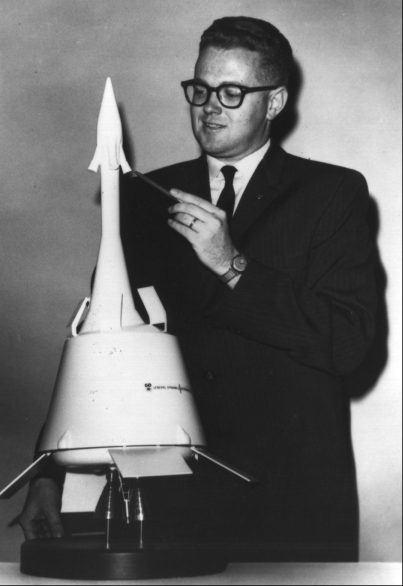
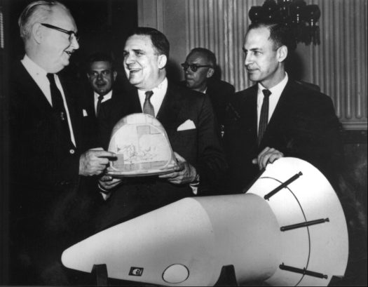
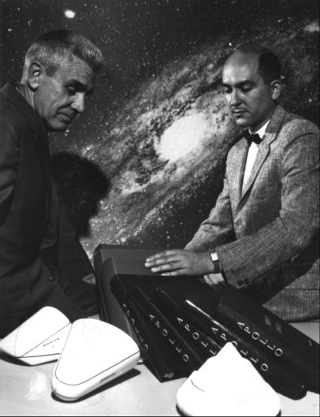

During the latter part of the 1960 presidential campaign, Apollo (and even Mercury) faced a murky future. This period of doubt, caused by the imminent change in administrations, led Glennan to call a mid-October session at Williamsburg, Virginia, to wrestle with the question of future NASA programs. The attendees - including top management from Headquarters and all the centers - voiced varying opinions, but the need for a manned lunar landing program threaded throughout the discussions. Glennan observed that the decision on Apollo would have to wait until the new President took office, although he assumed there would be few changes, since space flight was surely a nonpartisan ambition. But the next month, November 1960, Glennan was still not sure that Apollo was ready to move beyond the study phase without more answers than all his committees and groups had yet produced. Before spending the $15 billion he estimated Apollo would cost, Glennan wanted the reasons for going to the moon - international prestige or whatever they might be - laid out more clearly.
With the coming of the new year, then, there was a measure of uncertainty. Assuming that manned space flight would have some part in John F. Kennedy's "New Frontier," however, Glennan strengthened the chances for an Apollo program by announcing that the Space Task Group was a separate autonomous field element, responsible for all civilian manned space flight programs. Although the location of its permanent home was still unsettled - and Glennan favored Ames in California - Gilruth's position was affirmed. On the heels of this move, Glennan called the Space Exploration Program Council together again, to talk with many of those who had been at Williamsburg. He still warned that an Apollo hardware contract lacked presidential endorsement, but he also conceded that NASA seemed to be inevitably headed toward a lunar landing mission.57
During the first week of January 1961, Glennan waited in vain for some member of the incoming administration to get in touch with him about the transition. Meanwhile, Dryden and Seamans discussed the coming congressional budget hearings for fiscal 1962.* At this time, they decided to formalize Low's committee as the "Manned Lunar Landing Task Group." The expanded team was to prepare a position paper to answer, in some depth, the questions, "What is NASA's Manned Lunar Landing Program? . . . How much is it going to cost to land a man on the moon and how long is it going to take?"58
Low and his committee (still primarily a Headquarters group - Hall, Nicks, Alfred M. Mayo, and Pearson - but now including Faget and Koelle as spokesmen from the field centers for the spacecraft and launch vehicle) met on 9 January. Seamans outlined the group's task in detail. The members were to draft plans for a lunar program, describing both direct ascent and rendezvous, for use in budget presentations to Congress. They were to include cost and schedule estimates for both modes. Developing a plan for manned lunar landings was among NASA's major objectives, the group was reminded, even though the program was not yet approved.59
During the next four weeks, the committee labored over "A Plan for Manned Lunar Landing" and submitted it on 7 February. Low told Seamans that the report "accurately represents, to the best of my knowledge, the views of the entire Group." No major technological breakthroughs, no crash programs, and no real physiological barriers were envisioned. The concurrent development of spacecraft and launch vehicle should lead, if financially supported, almost inevitably to a manned lunar landing in 1968 to 1970, they thought. Its costs ought to peak around 1966 and total about $7 billion. The big Saturn and bigger Nova boosters would be built and tested anyway, the group reasoned, and a manned space station in earth orbit would probably be extant by then. Low conceived Apollo in two phases: first, extended earth-orbital missions; second, circumlunar, leading to lunar landing missions.
The Low Committee stated that lunar landings could be made by using either direct-ascent or earth-orbital rendezvous modes. Launch vehicle development would determine how large a step NASA could take in space at any given time. Moon landings demanded launch vehicles that could lift from 27,200 to 36,300 kilograms into space fast enough to escape the earth's gravitational pull. (The C-2 Saturn in the agency's fiscal 1962 budget request would be able to boost no more than 7,000-8,000 kilograms to that velocity. It could thus send manned flights to the vicinity of the moon, but it could not land there and then return its cargo to the earth.) The committee cited two ways of getting this booster capability for manned landings, either refueling a number of C-2s in earth orbit or building a vehicle large enough to perform the mission directly from the ground. Although both appeared feasible, the earth-orbital-rendezvous scheme would probably be quicker. Accordingly, NASA must develop orbital operations techniques; refueling in orbit would probably be possible by 1967 or 1968.60
And there the matter rested. Early 1961 was an unsettled period for NASA. With the country acquiring a new President and the agency a new Administrator, the prospect for moon flights was highly uncertain. But Kennedy was deeply interested in space. Before his inauguration, he had appointed an ad hoc committee, headed by Jerome B. Wiesner of the Massachusetts Institute of Technology, to review the entire missile and space effort. The Wiesner Committee's report, quite critical of the way Mercury was being managed and of NASA's apparent bias in favor of manned space flight at the expense of the unmanned science programs, called for a stronger technical competency within NASA and a redefinition of goals.61 Because Wiesner had joined in the "missile gap" rhetoric during the November presidential campaign, his committee's report the following January was suspect in some quarters. Nevertheless, it spurred NASA's civil service workers to prove it wrong.
The Wiesner report also touched off a debate on the choice of a new leader for the space agency. Wiesner, like other scientifically oriented advisers within the administration, favored a proved and respected scientist-engineer. Shortly before his inauguration, however, Kennedy had delegated responsibility for space matters to Vice President-Elect Lyndon B. Johnson, long-time champion of America's space programs in Congress and architect of the 1958 legislation that created NASA. In contrast to Wiesner, Johnson wanted a hard-driving, politically experienced administrator to preside over the agency. When he was named to head the powerful National Aeronautics and Space Council, Johnson won.
Glennan's resignation from NASA was effective 20 January, but Kennedy did not announce his successor until the end of the month. In the interim, at the request of the White House staff, Dryden was Acting Administrator. On 30 January, the President ended a spate of speculation by naming James E. Webb as NASA's new head. Quickly confirmed by the Senate, Webb was sworn in on 15 February. Dryden, whose continued service the new Administrator solicited, remained as Deputy Administrator, personifying scientific interests within the agency.
Dramatic changes for NASA seemed likely. Webb was a man with a long and varied background in government, industry, and public service. During the Truman era he had first been Director of the Bureau of the Budget (1946–1949) and later Under Secretary of State (1949–1952). With forceful demeanor, grandiloquent style, and a genius for extemporization, Webb soon became a familiar figure on Capitol Hill as champion of the space program and defender of the agency - and its fiscal interests - before Congress.62
Webb met with his key officials from Headquarters and the field centers at NASA's fifth semiannual retreat, in Luray, Virginia, 8–10 March 1961. He announced that Seamans would be the "operating vice president" of the agency and that the field centers would, in future, report directly to Seamans rather than to the major Headquarters staff offices, as in the past. There were hints of other significant changes that would be needed to manage a program the size of Apollo, once it was approved. Webb's ideas were not hatched overnight but were founded, in part at least, on documents passed on to him by Glennan. The principal contribution was a study led by Lawrence A. Kimpton, Chancellor of the University of Chicago. Contained in the "Kimpton Report" were recommendations that the centers should report directly to the Associate Administrator, that formally established project offices should manage projects, and that NASA should rely more on contracting support. In 1961, many of these suggestions were implemented. Seamans' new assignment was the first step along that path.63
Testimony before congressional committees began at the end of February. George Low described Apollo both as an earth-orbiting laboratory and as a program for circumlunar flight that could lead to a manned lunar landing. Abraham Hyatt outlined NASA's long-term objectives, with charts that showed large launch vehicle development as the pacing item.
Before Seamans and Low finished this round of testimony, a Russian test pilot named Yuri A. Gagarin circled the earth on 12 April in Vostok I. Congressional deliberations changed into direct demands to respond to the Russian challenge, just as they had in October 1957 after Sputnik I. Overton Brooks, chairman of the House Committee on Science and Astronautics, said bluntly on 14 April, "My objective, and this is speaking individually, is to beat the Russians." Seamans reminded the committee that Webb had told them only the day before that the cost of Apollo, without a crash program, would be between $20 billion and $40 billion over the next ten years. With an accelerated program, that figure could go even higher.64
President Kennedy had begun strengthening the space program in late March. He sent Congress a revised fiscal 1962 budget for NASA, raising the agency's funding more than $125 million over Eisenhower's recommended level of $1.11 billion. Much of this increase was earmarked for the Saturn C-2 and the F-1 engine and was expected to speed up development of these important items significantly.** 65
Seamans suggested even greater increases than NASA actually received. Given the funding levels he proposed, manned circumlunar flight with the C-2 would be feasible in 1967 rather than 1969. The F-1 engine, essential to an even larger launch vehicle, was the key to manned landings. "The first manned lunar landings," Seamans stressed, "depend upon this chemical engine as well as on the orbital and circumlunar programs and can be achieved in 1970 rather than 1973." More money, he told Webb, "will increase the rate of closure on the USSR's lead in weight lifting capability and significantly advance our manned exploration of space beyond Project Mercury." Webb forwarded Seamans' memorandum to President Kennedy on 23 March 1961, in response to a request for information about NASA's plans.66
While NASA's leaders appeared to have pushed Apollo closer to an approved program, activities in the field had also accelerated. The Technical Liaison Groups formed to evaluate the three industrial studies had grown to include, part-time, virtually every senior engineer in the Space Task Group, as well as representatives from other NASA centers. By mid-February, feverish preparations were being made by Donlan's office for separate midterm reviews of the Martin, General Electric, and Convair contracts. In March, the industrial teams came to Langley one by one and stood before a large audience who had come to hear what the contractors had to tell.
Each company followed roughly the same agenda: trajectory analysis; guidance and control; configuration and aerodynamics; heating; structures and materials; human factors; onboard propulsion; mechanical systems; and instrumentation and communications.
The NASA auditors commented on the presentations, each of which seemed a bit too general and lacking in the technical information the NASA planners wanted. Martin Company's team, for instance, led by E. E. Clark and Carlos de Moraes, was complimented for its briefing on mechanical systems but chided for neglecting structures and materials analyses related to Apollo design requirements. The General Electric group, headed by George R. Arthur and Ladislaus W. Warzecha, scored high on human factors but low in its discussions of mission abort studies, instrumentation, and communications.67
Faget was especially irritated that none of the contractors had proposed modifying and expanding the blunt-body, Mercury-style spacecraft. Some theoreticians had predicted that the hot gas radiation heating caused by Apollo's greater reentry speeds would make this shape unacceptable, but experiments by Clarence Syvertson at the Ames Research Center indicated that these predictions would not materialize. In addition, Caldwell Johnson, Faget's chief design assistant, had recently finished a study on the advantages of the conical, blunt-body command module over the designs of any of the three contractors. Willard M. Taub, of the same office, later recalled that the contractors, after the midterm review, "had to jump in real fast and come in with a new vehicle based on the [Space Task Group] version." Conversely, Mel Barlow of Convair looked on the modified Mercury as only a slight technological advance. He said he was shocked to learn that NASA intended to keep that configuration.68
While most of the Space Task Group labored under heavy operational pressures - the third Mercury-Atlas had failed almost as miserably as the first - the nine Technical Liaison Groups at Langley tried to clarify the engineering designs for a spacecraft that would circumnavigate, and perhaps land on, the moon. Although they acknowledged that Saturn C-2 (or its next larger version) should be capable of sending a large payload to that body, the questions of how large, by what route, and with what capacities were by no means settled or even well defined.69
In early May of 1961, the first reports from the completed study contracts began arriving at the Space Task Group. All three contractors had spent considerably more than the $250,000 NASA paid them for the work.

Using a model at upper left, William Rector of General Dynamics Corp. describes the design his company proposed for the Apollo lunar mission.
Convair/Astronautics' report depicted a three-module lunar-orbiting spacecraft. Command, mission, and propulsion modules were designed primarily for lunar orbit, with flexibility and growth potential built in for more advanced missions (such as a lunar landing) with the same basic vehicle design. A total Apollo cost of $1.25 billion over about six years was estimated.
The San Diego-based company had selected a lifting-body concept, much like one conceived several years earlier by Alfred Eggers of Ames for the return vehicle. The command module, with an abort tower attached through launch, would nestle inside a large mission module. What Astronautics proposed was similar in its mode of operation to the command and service modules that ultimately evolved for Apollo. Convair/Astronautics envisioned mission planning as building progressively upon many earth-orbital flights before attempting circumlunar and then lunar-orbital missions. Earth landings would be by glidesail parachute near San Antonio, Texas. Elementary experiments that would evolve into rendezvous, docking, artificial gravity, maneuverable landing, and an eventual lunar landing were foreseen. The study cost the contractor about $1 million, four times what NASA paid the company. The other two contractors spent even more of their own money.70

NASA's second Administrator, James E. Webb (at center above), and George M. Low (right above) of NASA Headquarters receive a model of General Electric's proposed vehicle.
General Electric's study cost twice as much as Convair's and featured a semiballistic blunt-body reentry vehicle. Had this configuration been selected, the payload sent to the moon would have resembled the nose cone flown on the early Saturn C-1. General Electric's design capitalized upon hardware already almost ready to fly, but it did offer one innovation - a cocoonlike wrapping for secondary - pressure protection in case of cabin leaks or meteoroid puncture. Although General Electric did not estimate the final costs in its summary, the company was confident of achieving circumlunar flight by the end of 1966 and lunar-orbital flight shortly thereafter.71

At lower left, E. E. Clark and Carlos de Moraes of the Martin Company display three of a dozen command module configurations considered before the choice of the one to the right. De Moraes' hand rests on volumes containing about 9,000 pages that the company submitted as its Apollo study.
The Martin Company produced the most elaborate study of the three. Martin not only followed all the Space Task Group guidelines, but also went far beyond in systems analysis. Focusing on versatility, flexibility, safety margins, and growth, this was the only study that detailed the progression of steps from lunar orbiting to lunar landing. Martin's spacecraft would have been similar to the Apollo spacecraft that ultimately emerged. Later, when the hardware contract proposals were evaluated, Martin scored first on configuration design.
Martin recommended a five-part spacecraft. The command module was a flat-bottomed cone with a rounded apex and a tower for a tractor-rocket launch escape system. Behind the flat aft bulkhead were propulsion, equipment, and mission modules. Tradeoffs between weight and propulsion requirements led to the selection of a pressurized shell of semimonocoque aluminum alloy coated with a composite heatshield of superalloy plus charring ablator. Two crewmen would sit abreast, with the third behind, in couches that could rotate for reentry g-load protection and for getting in and out of the spacecraft. Flaps for limited maneuverability on reentry, a parachute landing system, and a jettisonable mission module that could also serve as a solar storm cellar, a laboratory, or even the descent stage for a lunar lander were also featured. Almost 300 persons in Martin spent the better part of the six months and about $3 million on the data and designs for their recommendations.72
NASA and its Space Task Group might have evaluated the contractor reports at a more measured pace in more normal times, but in April - the month before these reports came in - the pressures "to get America moving" toward the moon became intense.
* Budget estimates drafted in September 1960 placed Apollo costs at $100,000 for FY 1960 and $1,000,000 for 1961; NASA intended to ask for $35,500,000 for the program for FY 1962.
** Kennedy and Webb held budgetary discussions on 22 March, in which they covered 11 actions NASA would have to take to accelerate the space program: (1) increase the number of Mercury flights to learn more about man's behavior in space; (2) initiate possible long-duration Mercury flights with intermediate launch vehicles; (3) accelerate exploration to provide data for manned flights; (4) speed up studies of manned reentries at lunar return velocities; (5) begin development of solid-propellant rockets for first or second stages of Nova; (6) start design work on clustered F-1 engines for Nova; (7) commence design engineering of Nova, using clustered F-1 engines for the first stage; (8) begin developing tankage and engines for Nova's second stage; (9) expedite supporting technology required for attainment of lunar goal; (10) start construction of launch pads and other facilities; and (11) provide additional vehicles and spacecraft to hasten the Tiros meteorological program. Budget Director David E. Bell later wrote the President that Webb and his associates had presented the case for an accelerated space program very well. But, he warned, the United States might be better advised to concern itself with "men on earth" rather than with putting "men on the moon."
57. NASA, "Fourth Semi-Annual Staff Conference, Williamsburg, Virginia, October 16–19, 1960"; Donald H. Heaton to Seamans, "Space Task Group Staffing," 23 Nov. 1960; Seamans to Dir., Space Flight Prog., "Space Task Group Internal Organization," 28 Nov. 1960; Seamans, administrator's briefing memo, "Space Task Group Functions and Staffing," 30 Nov. 1960; Swenson, Grimwood, and Alexander, This New Ocean, pp. 300-01; NASA, "Functions and Authority - Space Task Group," General Management Instruction 2-2-7, 1 Jan. 1961; STG, "Space Task Group Becomes Separate NASA Field Element," news release, 3 Jan. 1961; House Committee on Science and Astronautics, Aeronautical and Astronautical Events of 1961: Report, 87th Cong., 2nd sess., 7 June 1962, p. 1; Minutes of Space Exploration Program Council, 5–6 Jan. 1961; Heaton, "U.S. Lunar Travel Program," paper presented to the Society of Automotive Engineers, New York, 8 Dec. 1960.
58. Dryden, interview, Washington, 1 Sept. 1965; Dryden to Emme, "Eisenhower-Kennedy transition," 27 Sept. 1965; NASA, "Fiscal Year 1962 Estimates, Manned Space Flight: Project Apollo," 5 Sept. 1960; anon., "Instructions to Manned Lunar Landing Task Group," 6 and 9 Jan. 1961.
59. Eldon W. Hall, "Manned Lunar Exploration Working Group, January 9, 1961."
60. Low to Assoc. Admin., NASA, "Transmittal of Report Prepared by Manned Lunar Working Group," 7 Feb. 1961, with enc., "A Plan for Manned Lunar Landing," January 1961; Hall, "Manned Lunar Exploration Working Group"; Hall to Rosen and Asst. Dirs., Office of Launch Vehicle Prog., "Manned Lunar Landing Program," 20 Feb. 1961; Low interview, 1 May 1964.
61. Jerome B. Wiesner et al., "Report to the President-Elect of the Ad Hoc Committee on Space," 10 Jan. 1961. For background to both Eisenhower's attitude toward man-in-space and Wiesner's advice to Kennedy, see remarks of retiring PSAC Chm. and President of MIT James R. Killian, Jr., "Making Science a Vital Force in Foreign Policy," Science 130 (6 Jan. 1961).
62. Dryden, 27 Sept. 1965; Rosholt, Administrative History, pp. 187-88; Jay Holmes, America on the Moon: The Enterprise of the Sixties (Philadelphia: Lippincott, 1962), pp. 189-92. For Webb background, see Senate Committee on Aeronautical and Space Sciences, Nomination: Hearing on the Nomination of James Edwin Webb to Be Administrator of the National Aeronautics and Space Administration, 87th Cong., 1st sess., 2 Feb. 1961, pp. 2-7.
63. NASA, "Summary of Presentations and Discussions, Fifth Semi-Annual Staff Conference, Luray, Virginia, March 8–10, 1961," n.d.; NASA, "Transition Memorandum Prepared by T. Keith Glennan, January 1961," n.d.; NASA, "Report of the Advisory Committee on Organization, October 1960," [Kimpton Report], n.d.
64. Senate Committee on Aeronautical and Space Sciences, NASA Scientific and Technical Programs: Hearings, 87th Cong., 1st sess., 1961, pp. 131-80; House Committee on Science and Astronautics and Subcommittees 1, 3, and 4, 1962 NASA Authorization: Hearings on H.R. 3238 and 6029 (Superseded by H.R. 6874), 87th Cong., 1st sess., 1961, pp. 341-47, 354-82; Swenson, Grimwood, and Alexander. This New Ocean, pp. 309, 332, 335; John M. Logsdon, The Decision to Go to the Moon: Project Apollo and the National Interest (Cambridge, Mass.: MIT Press, 1970); House Committee on Science and Astronautics, Discussion of Soviet Man-in-Space Shot: Hearing, 87th Cong., 1st sess., 13 April 1961.
65. Hyatt to Edward C. Welsh, Exec. Secy., National Aeronautics and Space Council, 27 April 1961, with encs.; agenda, NASA-BOB Conference with the President, 22 March 1961; David E. Bell, Dir., Bureau of the Budget, to the President, "National Aeronautics and Space Administration budget problem," n.d. (emphasis in original); Logsdon, "NASA's Implementation of the Lunar Landing Decision," NASA HHN-81, August 1969, p. 9; Ivan D. Ertel and Mary Louise Morse, The Apollo Spacecraft: A Chronology, vol. 1, Through November 7, 1962, NASA SP-4009 (Washington, 1969), p. 77.
66. Webb to the President, no subj., 23 March 1961, with enc., Seamans to Admin., NASA, "Recommended Increases in FY 1962 Funding for Launch Vehicles and Manned Space Exploration," 23 March 1961 (emphasis in original).
67. Piland note to Donlan, "Apollo Programming - January 1961," 20 Jan. 1961, with enc., subj. as above; agenda, "Space Task Group Study Progress Report," 15 Feb. 1961, with attachments; Piland to Assoc. Dir., STG, "Apollo study midterm review," 27 Jan. 1961, with enc., "Proposed Items for Inclusion on Agenda for Midterm Contractor Study Review"; Jack Cohen memo, "Mid-term presentations by Apollo study contractors," 27 Feb. 1961; Donlan, "Apollo Systems Study - Midterm reviews, March 1, 2, and 3, 1961," introductory remarks; STG, "Comments on the Convair Astronautics Company Midterm Presentation, March 1, 1961," "Comments on the Martin Company Midterm Presentation, March 2, 1961," and "Comments on the General Electric (MSVD) Company Midterm Presentation, March 3, 1961," all 8 March 1961; John D. Hodge to Chief, Ops. Div., "Mid-term Apollo Briefings Operations Critique," 9 March 1961; Smith J. De France to STG, Attn.: Donlan, "Midterm review of Apollo study contracts," 21 March 1961.
68. Caldwell Johnson, "Apollo Configurations: A Case for Selection of the Blunt Body - Semi-integrated Command Module for Concentrated Study," 9 March 1961; Faget interview; Willard M. Taub, interview, Houston, 10 April 1967; Mel R. Barlow, interview, San Diego, 28 Jan. 1970.
69. "Remarks by Mr. Robert R. Gilruth to the Apollo Technical Liaison Groups," 10 April 1961; minutes of meetings of Apollo Technical Liaison Groups: Configuration and Aerodynamics, Heating, Human Factors, Instrumentation and Communications, Onboard Propulsion, Structures and Materials, Trajectory Analysis, and Navigation, Guidance, and Control, 10–14 April 1961; Ertel and Morse, Apollo Spacecraft Chronology, 1: 78-81.
70. Convair (Astronautics) Div., General Dynamics Corp., and Avco Corp., "Apollo: Final Study Report," Rept. AE10363, 15 May 1961, 5 vols.: 1, "Summary"; 2, "Selected Vehicle Design"; 3, "Supporting Design Analyses"; 4, "Growth and Advanced Concepts"; and 5, "Implementation Plan."
71. General Electric Co., Missile and Space Vehicle Dept., "Project Apollo: A Feasibility Study of an Advanced Manned Spacecraft and System, Final Report," 15 May 1961, 11 vols.: 1, "Summary and Conclusions"; 2, "Systems Considerations"; 3, "Trajectories, Navigation, and Guidance"; 4, "On-board Propulsion"; 5, "Human Factors"; 6, "Aerodynamics, Configurations, Heating, and Structures and Materials"; 7, "Mechanical and Electrical Systems"; 8, "Preliminary Design"; 9, "Apollo Program Implementation Plan"; 10, "Cost Information"; and 11, "Selected Studies Applicable to Apollo."
72. Martin Co., "Apollo: Final Report," ER 12001, May 1961, 18 parts: 1, "System and Operation"; 2, "Support"; 3, "Trajectory Analysis"; 4, "Configuration"; 5, "Mechanical Systems"; 6, "Aerodynamic Heating"; 7, "Guidance and Control"; 8, "Life Sciences"; 9, "Onboard Propulsion"; 10, "Structures and Materials"; 11, "Instrumentation and Communications"; 12, "Test Program"; 13, "Fabrication and Quality Assurance"; 14, "Program Management"; 15, "Business Plan"; 16, "Preliminary Specifications"; 17, "Aerodynamics"; and 18, "Space Environment Factors."